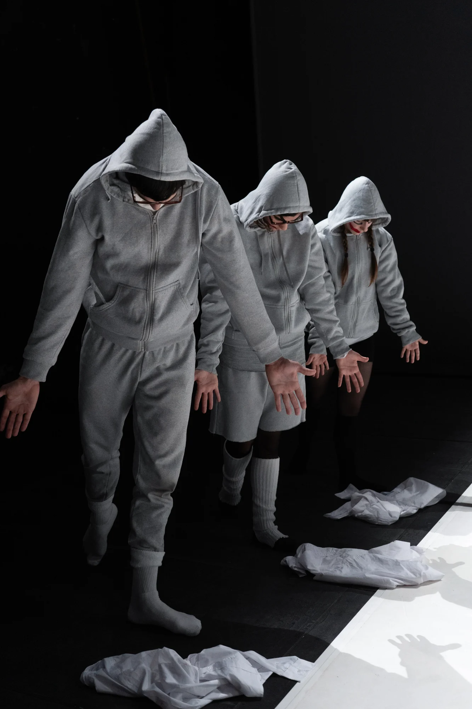
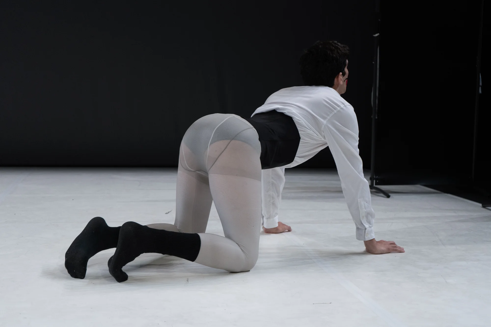
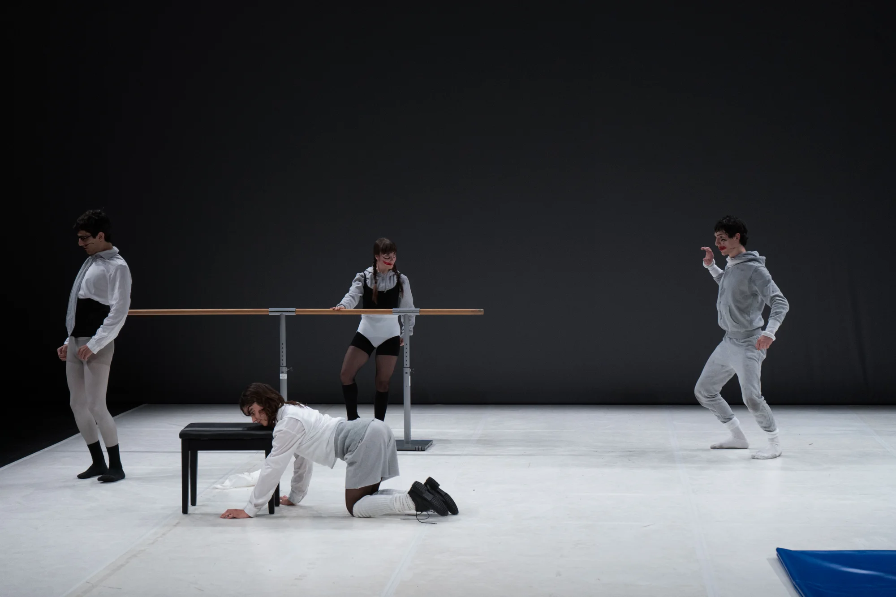

NAVAJA (2024)
peça escénica / laSADCUM
NAVAJA presenta un autoretrat escènic sobre poètiques sexoafectives en l’autoaprenentatge dictat per l’algoritme en l’adolescència SADCUM. Cinc personatges denominats LOINKS emprenen un (no)viatge emmarcats en una demo abandonada a mig programar.
- Premi a Millor Espectacle als premis DansaCat 2024
- Premi del Juart a millor peça al festival Pedra Viva 2024
- Autoria
- laSADCUM
- Direcció
- Guillem Jiménez
- Assistència de direcció
- Vera Palomino
- Coreografia
- Guillem Jiménez amb la col·laboració dels intèrprets
- Interpretació
- Judit Amengual, Laia Camps, Guillem Jiménez, Wilchaan Roy, Javi Valls
- Composició musical
- Alejandro Da Rocha, Guillem Jiménez
- Col·laboració musical
- Tarta Relena
- Disseny d’il·luminació
- Oscila
- Disseny de vestuari
- Gina Berenguer
- Escenografia
- Oriol Corral
- Maquillatge
- Juan Galo
- Muntatge Audiovisual
- Alan Gomis i Guillem Jiménez
- Producció
- Lila Brick (Muntsa Roca), Blanca Sartorius
- Assessorament artístic
- Roberto Fratini, Juan Carlos Lérida
- Coproducció
- Dansa Metropolitana
- Amb la col·laboració de
- Paral·lel 62
- Amb el suport de
- El Corralito CCA (TNT’23), Fabra i Coats (Fàbrica de creació), Laboratori Escénic (CCCB), Generalitat de Catalunya i Estruch (Fàbrica de creació de les arts en viu).
Per veure la peça completa, poseu-vos en contacte.
Fotos: Alan Gomi



